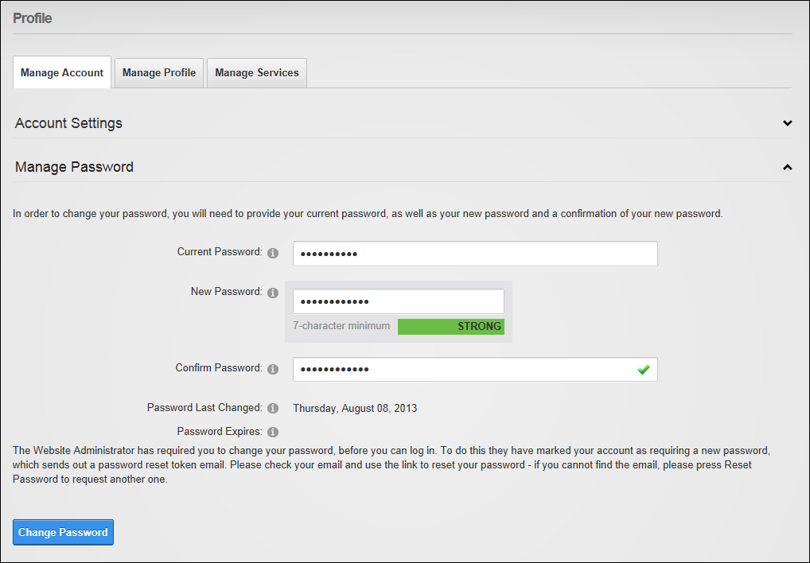

Changing your Password
How to update the password associated with your user profile. Important. If you are updating the default SuperUser or Administrator login details for the first time, begin this tutorial at Step 5.
- Login to the site. See "Logging into a Site"
- Click on your [Display Name] link (typically located in the top right corner of the site) - OR - Navigate to a View Profile module (also called the My Profile module). This displays the User Profile page.
- Click the Edit Profile button. This displays the Manage Profile page.
- Select the Manage Account tab.
- Expand the Manage Password section.
- In the Change Password section, update the following fields:
- In the Current Password text box, enter your current password.
- In the New Password text box, enter your new password.
- In the Confirm Password text box, re-enter your new password.

- Click the Change Password button.